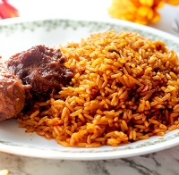
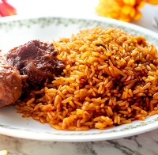
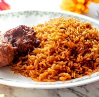

The Origin of jollof rice can be traced to the 1300s in the ancient Jolof empire, which spanned parts of today's senegal,
the Gambia and Mauritania. Rice farming flourished in this region and jollof began life as a dish called thieboudienne,
prepared with rice, fish shellfish and vegetables. As the empire grew, the Jolof people dispersed accross the region and
settled in different parts of West Africa, taking their sumptuous rice dish with them. Despite the ubiquity accross the
region, few foods have caused as much of a stir as jollof rice. Today, every West African country has at least one variation
of jollof, which both divides and unites the region. Each nation and family add their own twist and interpretation, which
perhaps is the root of the fierce competition taking place across social media, parties and street side charts.
| Ingredients | Quantity |
|---|---|
| Tumeric | 1 Tsp |
| Nutmeg | 1 Tsp |
| Olive oil | 1 cup |
| Tomato | 6 medium size |
| thyme | 1 Tsp |
| Curry | 1 Tsp |
| Pepper | 4 large red pepper |
| Spices | 3 Tsp |
| Tomato paste | Three big spoons |
| Chicken stock | 6 cups |
| Onions | 3 big size |
| Butter | 4 tsp |
| Salt | 2 Tsp |
| Rice | 5 cups |
